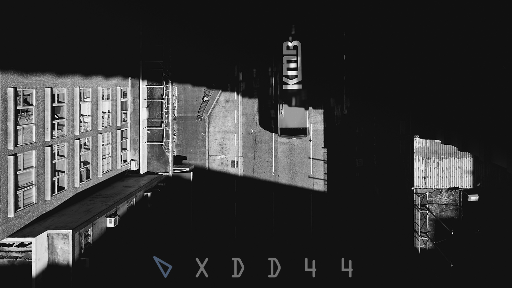
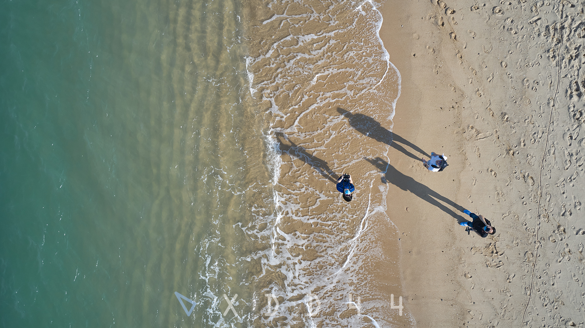
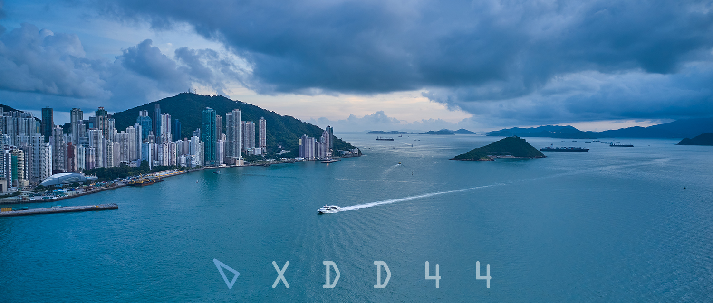
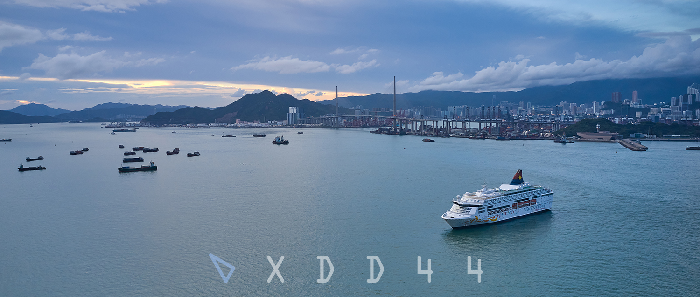
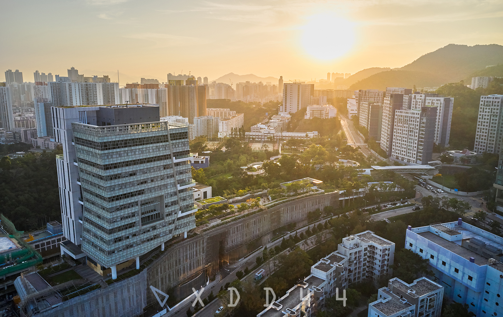

Chenyue "xdd44" DAI
I get myself a drone this year, originally for a better observation of the surroundings of my architecture project based at Central. Then I find it quite portable so I often carry it when I go out for relaxing. This collection lists relatively nice photos I picked from my drone's SD card.
While walking in Hong Kong's streets gets me closer to locals' vivid life, observing streets, beaches and other landscapes from a height is another unique experience. Roads, traffic and crowd become flows, huge buildings become objects, shapes on the ground are revealed. And drone is so flexible that you can choose almost any angle and distance you like.

Street
Trying to apply hard photo manipulation on drone photos to extract shape of light and shadow.
24 July 2020
Reclamation Street, Yau Ma Tei

Selfie
This is my favorite photo here so I topped it. This place is so relaxing as it located at the westernmost of Hong Kong Island, far away from busy streets. When I sit on the steps, waves are right below me surrounding with seascape.
9 April 2020
Sai Wan Swimming Shed, Kennedy Town

Lighthouse
This is basically what I can see from the swimming shed and I used the drone to get closer to the lighthouse, a silent buidling located on a small island.
9 April 2020
Green Island, Kennedy Town

Harbour
A photo of the harbour at Cheung Chau island. Many fishermen live on the island and their boats gather back at the harbour in late afternoon. On the ground are locals' residential buildings with a unique colorful style.
12 April 2020
Cheung Chau Island

On the beach
It's quite a day that day. Cheung Chau has a clean beach that attracts many outside visitors, including my friends and me.
12 April 2020
Cheung Chau Island

Monster building
Back to the city, this is one of my favorite photos. Yes, the building on the right is the "Monster building" -- Yick Cheong Building. Right opposite to it is a brand-new commercial building. Fancy cars and tramways pass through King's Road between them. Such a typical image of Hong Kong's social contradiction.
10 May 2020
King's Road, Quarry Bay

Central
Queen's Road in this photo is actually the first raod in Hong Kong dated back to 1840s. From today's view it is quite narrow but still a very important line as it goes through busy commercial area.
26 April 2020
Queen's Road, Central

Ferry Point Estate
The estate consists of eight buildings built in 1960s. Before reclamation, the place was surrounded on three sides by water and adjacent to the busy Jordan Road Ferry Pier.
18 July 2020
Ferry Point, Austin

Circle
Prosperous Garden is a residential area in Yau Ma Tei. It is a successful try of Urban Improvement Scheme promoted by Hospital Authority that replace the old Tong Lau by modern high-rise apartments.
31 May 2020
Prosperous Garden, Yau Ma Tei

Overpass
An interesting spot at Nid-levels.
22 March 2020
Intersection of Conduit Road and Robinson Road, Mid-levels

Street
This typical Hong Kong old street is the street where I go most. On-road stalls and neon lights surrounded by aged buildings mark one of Hong Kong's symbols.
2 April 2020
Fuk Wa Street, Sham Shui Po

Sha Tin Hoi
The mouth of Shing Mun River where the coastline on the right reaches out towards Ma On Shan.
25 March 2020
Sha Tin Hoi

Twin bridge
Twin bridges over Shing Mun River. The right one is a cycling track. The left one is wider but also forbids cars so it becomes an exercise field for local people.
25 March 2020
Sha Tin Twin Bridge

Victoria Harbour
29 April 2020

Victoria Harbour
29 April 2020

CityU AC3
AC3 building of my university, Shek Kip Mei Park and student residence.
29 April 2020
Shek Kip Mei

Shek Kip Mei Park
The same spot from directly above.
20 April 2020
Shek Kip Mei